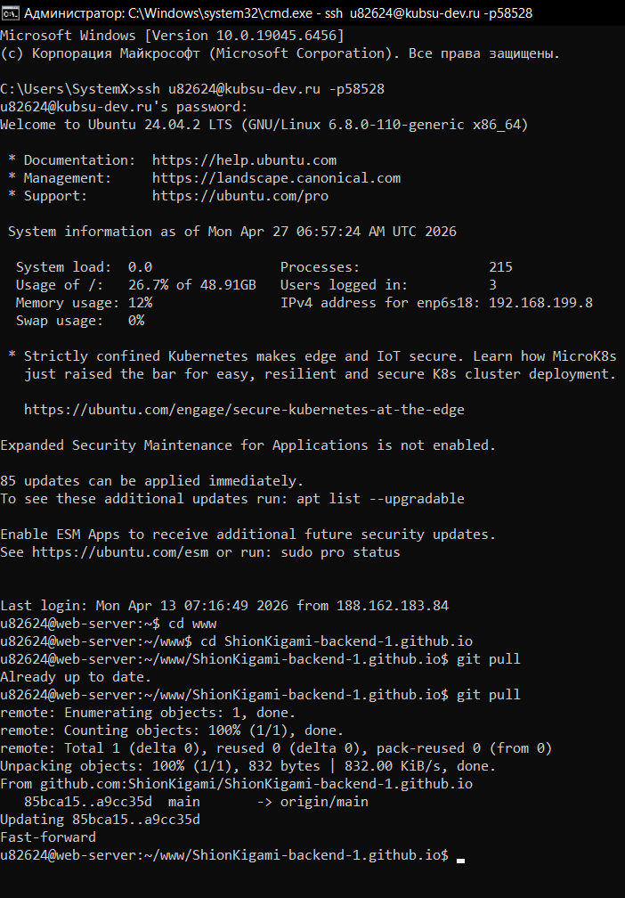
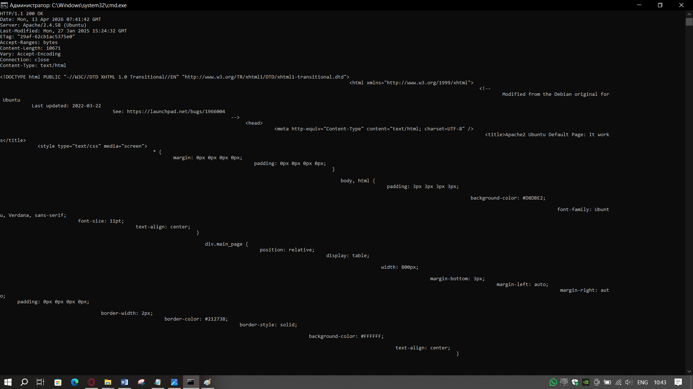
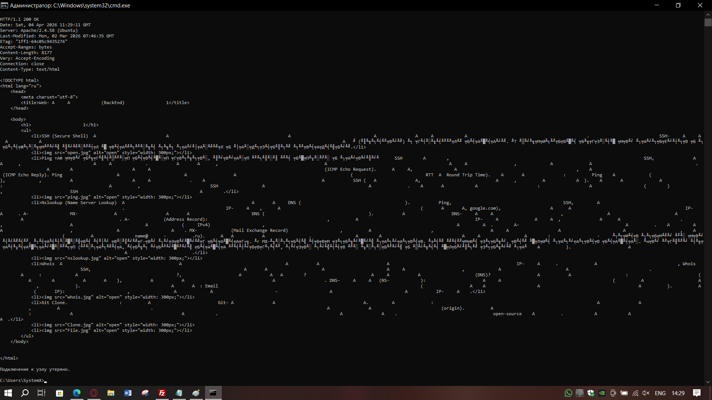
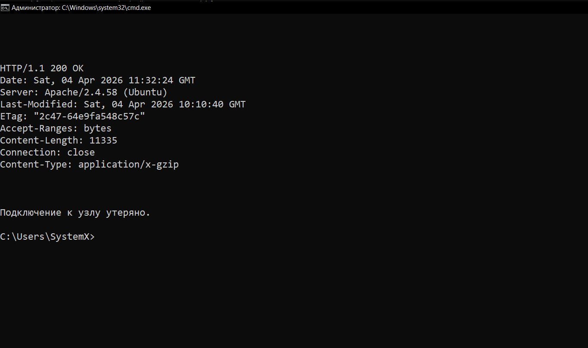
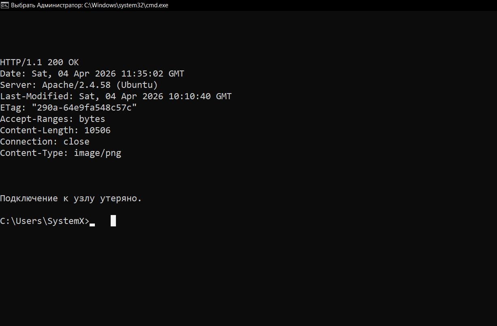
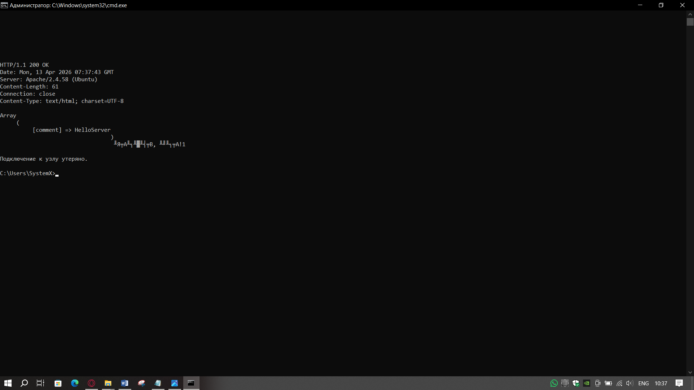
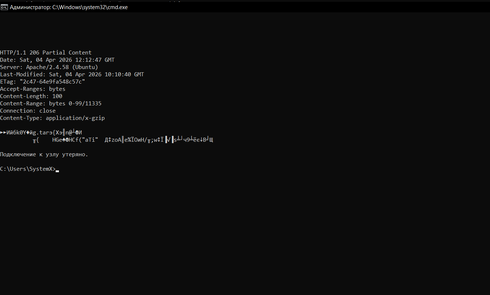
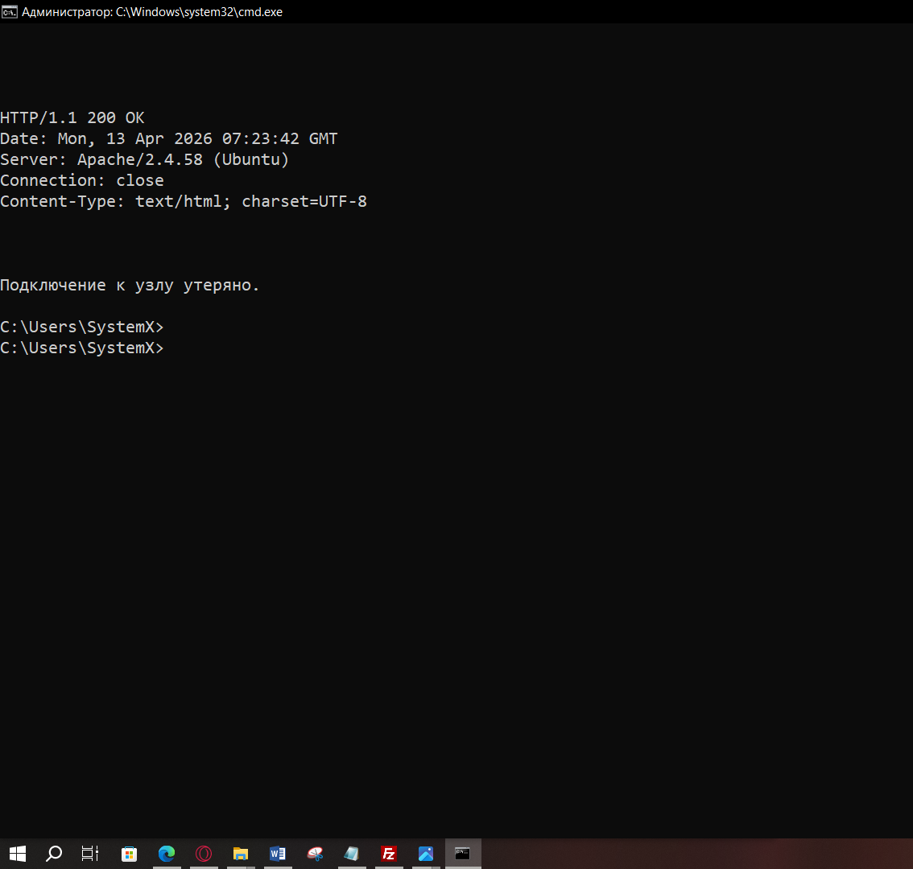

Заданние №1
- Сперва закидываем файлы для задания в репозиторий, после используем git pull через ssh, чтобы перенести папку из репозитория файлы на сервер. Приступаем к работе.

- Для получения главной страницы в протоколе HTTP 1.0 используем запрос:
GET / HTTP/1.0
Метод GET посылает запрос на получение информации от сервера. В ответ сервер возвращает запрошенный ресурс (главную страницу). В протоколе HTTP 1.0 после каждого запроса соединение закрывается, поэтому заголовок Host не требуется, но может быть добавлен. Структура запроса: GET(метод) /(путь к ресурсу) HTTP/1.0(версия протокола).

- Для получения внутренней страницы в протоколе HTTP 1.1 используем запрос:
GET /ShionKigami-backend-1.github.io/index.html HTTP/1.1 /n
Host: u82624.kubsu-dev.ru /n
Connection: close
С протоколом HTTP 1.1 обязательно указывается заголовок Host, так как на одном IP-адресе может находиться несколько сайтов. Заголовок Connection: close указывает серверу закрыть соединение после ответа, иначе соединение остаётся открытым для последующих запросов. Структура: GET(метод) /путь/к/странице(request-uri) HTTP/1.1(версия) Host(обязательный заголовок).

- Для определения размера файла file.tar.gz, не скачивая его, используем запрос:
HEAD /ShionKigami-backend-1.github.io/files/file.tar.gz HTTP/1.1
Host: u82624.kubsu-dev.ru
Connection: close
Метод HEAD аналогичен GET, но сервер возвращает только заголовки ответа без тела ресурса. Размер файла передаётся в заголовке Content-Length. Это позволяет узнать размер файла без его загрузки. Структура: HEAD(метод) request-uri HTTP/1.1(версия) Host(обязательный заголовок).

- Для определения медиатипа ресурса /image.png используем запрос:
HEAD /ShionKigami-backend-1.github.io/files/image.png HTTP/1.1
Host: u82624.kubsu-dev.ru
Connection: close
Медиатип (MIME-тип) передаётся в заголовке ответа Content-Type (например, image/png). HEAD позволяет получить этот заголовок без скачивания самого изображения. Структура: HEAD метод + request-uri + HTTP/1.1 + Host.

- Для отправки комментария на сервер по адресу /index.php используем запрос:
POST /ShionKigami-backend-1.github.io/files/index.php HTTP/1.1POST /ShionKigami-backend-1.github.io/files/index.php HTTP/1.1
Host: u82624.kubsu-dev.ru
Content-Type: application/x-www-form-urlencoded
Content-Length: 19
Connection: close
comment=HelloServer
Метод POST используется для передачи данных на сервер в теле запроса. Обязательные заголовки: Content-Type: application/x-www-form-urlencoded (формат данных) и Content-Length: число_байт (длина тела запроса). Тело запроса содержит данные: comment=HelloServer. Сервер обрабатывает эти данные как комментарий. Структура: POST метод + request-uri + HTTP/1.1 + Host + Content-Type + Content-Length + пустая строка + тело_запроса

- Для получения первых 100 байт файла /file.tar.gz используем запрос:
GET /ShionKigami-backend-1.github.io/files/file.tar.gz HTTP/1.1
Host: u82624.kubsu-dev.ru
Range: bytes=0-99
Connection: close
С добавлением заголовка Range: bytes=0-99. Заголовок Range позволяет запросить только указанный диапазон байт ресурса, а не весь файл. Сервер при поддержке частичной выдачи возвращает статус 206 Partial Content и только запрошенные байты. Структура: GET + request-uri + HTTP/1.1 + Host + Range: bytes=начало-конец.

- Для определения кодировки ресурса /index.php используем запрос:
HEAD /ShionKigami-backend-1.github.io/files/index.php HTTP/1.1
Host: u82624.kubsu-dev.ru
Connection: close
Кодировка ресурса может быть указана в заголовке Content-Encoding (например, gzip) или в параметре charset заголовка Content-Type (например, charset=utf-8). HEAD позволяет получить эти заголовки без загрузки содержимого. Структура: HEAD метод + request-uri + HTTP/1.1 + Host.
